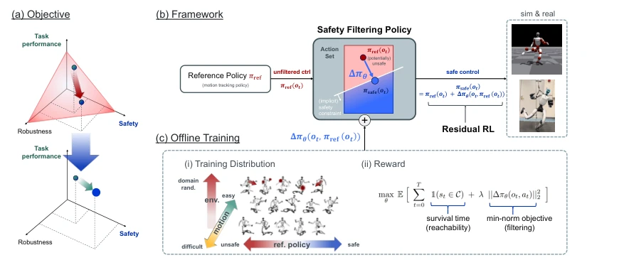
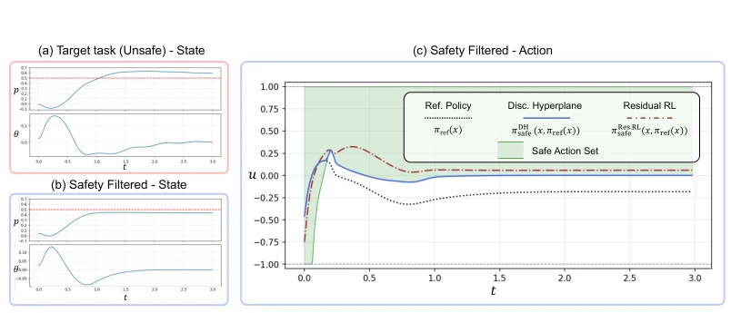
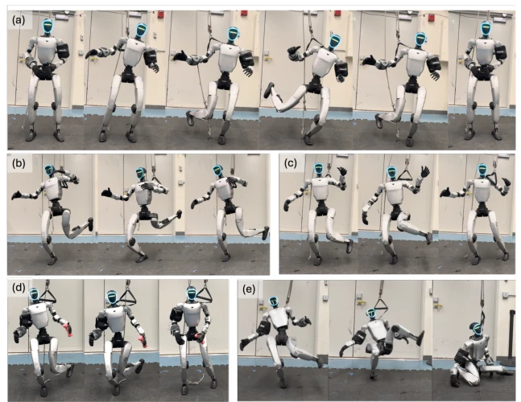

This paper adds a "safety bodyguard" to humanoid robots that are already balanced, with the idea of "specialization": letting the main policy handle tasks and the residual policy handle survival. Although "performance-safety decoupling" sounds appealing, avoiding the Pareto trap in single-policy training, it essentially relies on data-driven black-box learning, lacking rigorous guarantees from traditional safety control theory. The authors claim the residual policy acts like a minimum norm safety filter, but experiments show it is more conservative than the discriminant hyperplane filter; is this robustness or overfitting? Although hardware experiments demonstrate deployment capability, perception is not mentioned; it relies purely on proprioception for balance, still far from human-like "comprehensive situational awareness" balance. Overall, it is a practical engineering improvement, but theoretical depth is slightly insufficient; do not expect it to provide mathematical safety proofs like CBF. Additionally, the conservatism of the residual policy may limit the performance ceiling and cannot provide hard safety guarantees, which remains a potential risk in extreme scenarios.
Humanoid robot control faces the complexity of high-dimensional dynamics and contact interactions; although Reinforcement Learning (RL) can achieve locomotion, it easily generates dangerous actions leading to falls [1, 2]. Existing methods attempt to balance performance and safety in a single policy, but this is essentially multi-objective optimization, where gradient descent often converges to a suboptimal Pareto frontier [1]. Safety RL methods based on constrained MDPs [3, 4] struggle to capture instantaneous constraint violations (e.g., collisions). Traditional safety filters rely on explicit dynamic models or Control Barrier Functions (CBF) [5], which have poor scalability in high-dimensional systems. Additionally, methods based on Hamilton-Jacobi reachability [8] require complex Bellman equations. Therefore, how to learn a generalizable safety filtering mechanism without sacrificing performance becomes a key pain point. Existing safety RL often couples objectives through penalty terms, leading to performance degradation, while model-dependent methods struggle to adapt to complex dynamics, urgently needing a decoupled and data-driven solution.
The core framework ResSafe decouples control into two parts: Nominal Policy responsible for task performance, Residual Policy responsible for safety correction. 1. **Reference Policy Training**: Based on the balance motion tracking pipeline [2], generate 10,000 diverse motion datasets covering different difficulties. 2. **Residual Policy Learning**: Adopt PPO algorithm, input is state and reference policy actions. Reward function designed as survival time maximization (simulating reachability) plus minimum norm penalty (imitating safety filter correction), and add base velocity stability and action smoothness terms. 3. **Training Strategy**: Introduce random loads and pushing perturbations to expose failure states; use multiple reference policy checkpoints to train the residual policy, enhancing generalization capability. 4. **Execution**: Final action = Reference action + Residual correction. This method implicitly learns a safety filtering mechanism, requiring no online optimization, similar in structure to minimum norm safety filter [6], but avoids explicit model dependence through data-driven means. 5. **Network Structure**: Adopt asymmetric Actor-Critic, Critic can access ground truth state, Actor only uses deployment-time observations. 6. **State Space**: Includes proprioceptive states, reference actions, and historical states, dimension approximately 122. In this way, the residual policy acts as an implicit safety filter, correcting potential dangerous actions while maintaining performance.

Figure 2: ResSafe Overview. (a) By decoupling the learning of performance and safety, we aim to achieve a better performance–safety Pareto frontier. (b) To achieve this, we propose a residual RL-based architecture in which the residual RL policy learns a safety correction, resembling the structure of safety filters [5, 6]. (c) We train the residual RL safety filtering policy primarily through a maximum-survival-time reachability for- mulation. To improve generalization across various reference actions, we expose the residual RL policy during training to varying levels of reference motion difficulty, reference policy safety, and domain randomization.

Figure 3: Cart-Pole Running Example. (a) Reference policy is trained for a task positioning the cart position to p = 0.6, and violates the safety constraint, p ≤0.5. (b) Learned safety filters can successfully prevent the state from safety violations. (c) πsafe under the learned min-norm discriminating hyperplane safety filter (blue) and residual RL (proposed method, brown).
Validated on Unitree G1 humanoid robot, including simulation (IsaacGym) and real-robot experiments. **Baseline**: No randomization reference policy, Load randomization reference policy, Discriminant Hyperplane (DH) safety filter. **Metrics**: Tracking error (Epos-l) and Fall Rate. **Results**: ResSafe has the lowest fall rate under load perturbations (1.11%), and tracking error is better than the baseline with safety penalties. Multi-checkpoint training significantly improved generalization across reference policies, while single-checkpoint training had poor generalization. Real-robot experiments show ResSafe outperforms baselines and DH filter under various loads and motions. **Findings**: Decoupled learning achieves better performance-safety-robustness trade-off, but residual policy is more conservative than DH filter. Ablation studies show random loads and pushing perturbations are crucial for improving robustness; lacking these perturbations leads to overly conservative policies.

Figure 1: Humanoid balance tasks under various payloads. We introduce ResSafe, a performance-safety decoupling framework based on residual reinforcement learning which learns safety filtering. (a)-(d) Successful experiments of balance motions under our policy. (e) Failure case of the baseline policy. See more details in Section 5.3 and Table 3.